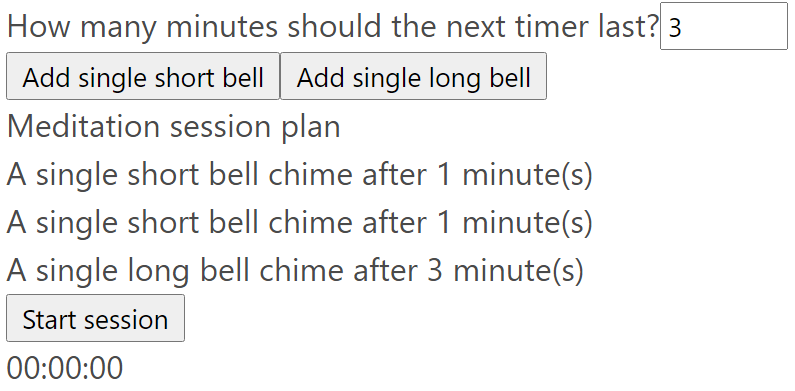
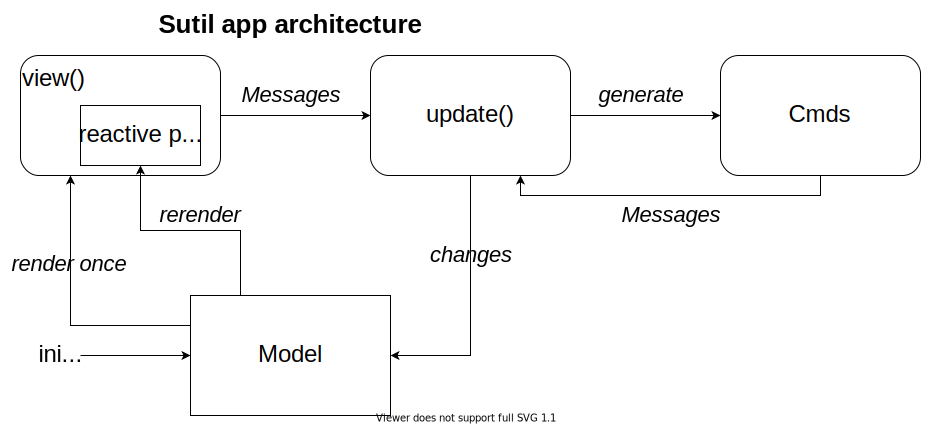

Serene Sitting with Sutil 🔗
von Martin Grotz, 2021-12-08
Preface
Today for the F# advent calendar we'll be building a very simple web-based meditation session timer with sounds with the help of F# and Sutil.
F# is a functional-first multiparadigm general-purpose programming language living in the .NET ecosystem. It's pragmatic, concise, relatively small and stable, yet very powerful.
Writing an interactive web application is usually done in JavaScript or TypeScript. But we can also use other languages, like F#. The Fable compiler allows us to write F# code (with some additional annotations and a few limitations) and compile it to JavaScript to run it in the browser (or in other places where JavaScript can be run, like Node.js or Electron apps). On top of the Fable compiler sit different other libraries, each with their own focus: For example if you want to get a React app as output there is Feliz.
But in JavaScript-land there's a new kind of framework (or more precisely: compiler) with Svelte: There the code you write is compiled by the Svelte compiler into reactive JavaScript code, and no big initial runtime file is required. Svelte also avoids a virtual DOM and thus gains improved performance. Only the parts explicitly marked as reactive are updated, and only when necessary.
Sutil brings these ideas into the F#/Fable world. The ideas and resulting web application follow the Svelte model, but we can write F# instead of JavaScript or TypeScript! Sutil borrows parts from other projects (e.g. the HTML engine is taken from Feliz) and combines them with its own ideas. Sutil is still very much in beta, and the documentation is incomplete and a lot of features are not implemented yet. I still wanted to take it out for a spin and see if my small idea can be done.
Warning: I am not an experienced F# programmer, and I have only dabbled in Fable a little bit. So some things can very likely be solved more elegantly than I did...
What are we building?
Our goal is a small website where we plan and run a personal meditation session: Steps can be added with a duration in minutes and one of two sounds that is played when the duration is up. Multiple steps can be queued before the session gets started.
In the end it will look like this: 
We won't be doing any styling and will only do very basic functionality to keep the code size and complexity in check. We will also sacrifice writing tests (don't do this in any real project!) for brevity.
I'll be using Windows 10 and VSCode as an IDE with the Ionide plugin, node.js 16 and dotnet5.
The full code is accessible on Github.
The basic architecture
As I am a big fan of Elm we will use Sutil with the "Elmish" architecture. Apart from the official documentation of The Elm Architecture there also exists a very useful book that describes it in the Fable context.
In short it means that the data in our application flows only in one direction: The application state is stored in the model (an F# record), which in turn is given to the view function (a normal function returning a SutilElement). The view function can emit Messages via a dispatch function. These Messages are then sent to the update function that returns a changed model. The parts of the view we have marked as reactive are updated and the cycle starts anew. In Sutil the view function is only called once, but everything that is reactive within the view gets updated when the value it is bound to changes. 
The empty project, but with all the resources we need, can be cloned most easily with
npx degit MATHEMA-GmbH/blog-fsharp-sutil-mgrotz#fresh-start blog-fsharp-sutil-mgrotz.
Afterwards one run of dotnet tool restore && npm install in the project folder
installs all the dependencies and starting it with npm run start makes it accessible in the
browser at http://localhost:8080/.
First increment: Duration input
All our changes are done in the same way: Think about what needs to change in the state (Model), then how it will be shown (View) and then how Messages from the view will change the state (Update). That's the beauty of the MVU architecture - it allows a very structured approach!
All code goes into the App.fs file - the program is small enough to fit into one file! At
the very top we need a few imports in our module:
module App
open Sutil
open Sutil.DOM
open Sutil.Attr
open Sutil.Helpers
First we define our Model as a record and update its init function that is called once on program start and a helper function to get the value out of the record more easily:
type Model = { LastTimerValue : int }
let getLastTimerValue m = m.LastTimerValue
let init () : Model= ({ LastTimerValue = 1 })
Next we'll create a new function that returns a partial view. The store is a data structure used by Sutil to allow us to subscribe to value changes and thus add reactivity to our application. The dispatch function is needed to dispatch Messages from events in the view to the update function.
Html.ul [
Html.li [
Html.label [Html.text "How many minutes should the next timer last?"]
Html.input [
// we have to use type' here, because type is a reserved word in F#
type' "number"
Attr.value (model |> Store.map getLastTimerValue |> Store.distinct, LastTimerValueChanged >> dispatch)
Attr.min 1
Attr.max 15
Attr.placeholder "How many minutes?"
]
]
]
The Html namespace allows us to create HTML elements, and the list given to each element allows us to state both sub-elements and attributes.
Attr.value creates a reactive binding from a store value to the input value, so the DOM part
gets updated whenever the given value changes. Store.map allows us to map the store value
(in our case the complete Model) to something else, here just the LastTimerValue. We then
pipe this into Store.distinct to avoid updating the value every time anything in the model
changes. The second part of the tupled argument to Attr.value is what should happen when
the value changes in the input field. Here we want to dispatch the Message
LastTimerValueChanged.
Adding this Message subtype to the union type for all messages allows us to handle it in the update function and return a changed model with the new value:
type Message =
| LastTimerValueChanged of int
let update (msg : Message) (model : Model) : Model =
match msg with
| LastTimerValueChanged newValue -> { model with LastTimerValue = newValue }
Now we can add our sub-view to the main view of the application:
let view() =
// create the application with The Elm Architecture
let model, dispatch = () |> Store.makeElmishSimple init update ignore
Html.div [
Html.div [
planEditView model dispatch
]
]
And finally initialize the whole program with all the functions we created at the end of our App.fs file:
view() |> Program.mountElement "sutil-app"
With this code in place the app can be started via npm run start and opened in the browser
at http://localhost:8080/.
Second increment: Adding steps
But the minutes alone won't make a good meditation timer app. We also need to add multiple steps with a sound when their time is up.
We can use the same approach as in the first increment: Extend the Model, extend the view, extend the Message union type and the update function.
Our model gains a new field and a new value function:
type Model = {
(...)
TimerStepsReversed : TimerStep list
}
let getTimerSteps m = m.TimerStepsReversed |> List.rev
We also need the new record type TimerStep and a way to express the diffent possible sounds.
Oh, and a few helper functions for unique ID generation from Sutil. As F# is always parsed from top to
bottom these have to be placed before the Model type definition:
let idGenerator = makeIdGenerator ()
type Sound =
| SingleShortBell
| SingleLongBell
let soundToString sound =
match sound with
| SingleShortBell -> "A single short bell chime"
| SingleLongBell -> "A single long bell chime"
let soundToFile sound =
match sound with
| SingleShortBell -> "powerUp7.wav"
| SingleLongBell -> "FileLoad.wav"
type TimerStep = {
StepId : int
Minutes : int
Sound : Sound
}
let createStep minutes sound =
{StepId = idGenerator(); Minutes = minutes; Sound = sound;}
Next we extend our sub-view function and add some buttons, one for each of our two possible sounds after
the existing Html.li element:
Html.li [
(...)
]
Html.li [
Html.button [
type' "button"
onClick (fun _ -> dispatch AddSingleShortBell) []
Html.text "Add single short bell"
]
Html.button [
type' "button"
onClick (fun _ -> dispatch AddSingleLongBell) []
Html.text "Add single long bell"
]
]
Each button dispatches a different Message when clicked. The list which is the second argument to
onClick allows event modifiers for browser events, things like "stopPropagation"
or "preventDefault".
Of course we now need the two new Message cases and the update function to handle them:
type Message =
(...)
| AddSingleShortBell
| AddSingleLongBell
let update (msg : Message) (model : Model) : Model =
match msg with
(...)
| AddSingleShortBell ->
let withNewStep = (createStep model.LastTimerValue SingleShortBell) :: model.TimerStepsReversed
{ model with TimerStepsReversed = withNewStep }
| AddSingleLongBell ->
let withNewStep = (createStep model.LastTimerValue SingleLongBell) :: model.TimerStepsReversed
{ model with TimerStepsReversed = withNewStep }
We create the new step and prepend it to the existing steps - which is why we stored those in reverse in the model. Prepending to an existing list is cheap in F#, but appending is expensive. Thus it's often best to store things in reverse in a list and only get them in the "right" order when used.
By the way: If we want to log something to the browser console we can do this with a function from Fable (although this breaks the "side-effect freeness" of the normal Elm Architecture):
Browser.Dom.console.info(Fable.Core.JS.JSON.stringify withNewStep)
These changes are enough to allow us to add steps to our meditation timing plan. If the dev server is
still running we almost instantly see the code changes at http://localhost:8080 - if the
code compiles that is.
Third increment: Displaying the added steps
After adding steps we need to display them, and this will be the first time we will need reactive bindings for whole elements and lists of elements the first time.
What we won't need are changes to our Model and the update function, though. We already have everything we need, we just need a new sub-view function:
let meditationPlanView (model: IStore<Model>) dispatch =
fragment
[
Html.h2 "Meditation session plan"
Bind.el (model |> Store.map getTimerSteps, fun steps ->
if List.isEmpty steps then
Html.h3 "No steps planned yet"
else
Html.ul
[
Bind.each ((model |> Store.map getTimerSteps), (fun step ->
Html.li [
Html.span $"{soundToString step.Sound} after {step.Minutes} minute(s)"
] )
)
]
)
]
Four things are of interest here:
-
We need to wrap the list of HTML elements we want to return from a view function into
fragment [...]so it can be inserted correctly in the parent view if we want to return multiple elements at the same nesting level. -
Bind.elcreates a reactive binding: The first part of the tupled argument is the store value we bind to, and the second is the code that gets executed everytime the value changes. In our case we bind to our list of timer steps and display either a text if the list is still empty, or a list of the steps. -
Bind.eachcreates a reactive binding, too, but this time the value needs to be a list of things, and the executed function gets each element in turn and produces aSutilElementfor each element of the list. We use this to create a list of the steps whenever that list changes. -
Most HTML element functions allow a string as the only argument, this is shorthand for e.g.
Html.span [Html.text "our text"]. We use the relatively new string interpolation feature in F# to display the name of the selected sound and the duration of the timer step with$"{soundToString step.Sound} after {step.Minutes} minute(s)".
Now all that's left is to add our new view function in the main view function of our app:
let view() =
(...)
Html.div [
Html.div [
(...)
meditationPlanView model dispatch
]
]
This makes the list of already added steps visible.
Fourth increment: Starting the session
Now comes the heart of our application and the most complicated part: Starting the timer, letting time pass and walking through the meditation plan step by step. Plus we want to remove some things from the DOM while our timer is running.
So, as usual, we start with extending the Model with quite some field:
type Model = {
(...)
Running : bool
StartTime : Ticks
ElapsedTimeSinceStart : Ticks
PlayPlan : PlayPlan option
}
let getRunning m = m.Running
let getElapsedTime m = m.ElapsedTimeSinceStart
let getPlayPlan m = m.PlayPlan
let init () : Model= ({
(...)
Running = false
StartTime = Ticks 0L // the L marks the 0 as an int64 ("long") in F#
ElapsedTimeSinceStart = Ticks 0L
PlayPlan = None
})
We also need new types: Ticks to give the int64 we get from .NET's DateTime's Ticks property a more semantic name and the PlayPlan record to store the steps with additional info:
type Ticks = Ticks of int64
let formatElapsedTime (Ticks elapsedTime) : string =
System.TimeSpan(elapsedTime).ToString()
type StepWithEndTime = {
Step: TimerStep
EndTime: Ticks
}
type PlayPlan = {
CurrentStep : StepWithEndTime
RemainingSteps : StepWithEndTime list
}
The helper function for Ticks' formatting shows that we can also call some .NET functionality directly via the Fable compiler's magic - but not everything is supported. For example we can't use a custom format string with TimeSpan's ToString() method, because Fable does not support this (yet).
Our PlayPlan consists of both the currently active step and all the remaining steps. This makes our intention clear that we always need a valid CurrentStep when running our timer. In our model it's optional - which means we wrap it in an Option type to explicitly state it can be missing while still avoiding the dreaded Null.
But at first we need a button to start our session, which should only be visible while there is at least one meditation timer step and our timer is not running, yet. We'll implement it in its own sub-view function. Oh, and we want another small function to render the elapsed time to the DOM.
let startSessionButton (model: IStore<Model>) dispatch =
Bind.el ((model |> Store.map (fun m -> (m.Running, List.isEmpty m.TimerStepsReversed)) |> Store.distinct),
fun (running, noSteps) ->
if running || noSteps then
Html.text ""
else
Html.button [
type' "button"
onClick (fun _ -> dispatch StartSession) []
Html.text "Start session"
]
)
let showElapsedTime (model: IStore<Model>) dispatch =
Bind.el ((model |> Store.map getElapsedTime), fun elapsedTime ->
Html.div (formatElapsedTime elapsedTime)
)
Now we need to add it to our main view function:
let view() =
(...)
Html.div [
Html.div [
(...)
startSessionButton model dispatch
showElapsedTime model dispatch
]
]
The last step here is to extend our Message type and handle the new StartSession message in
the update function again:
type Message =
(...)
| StartSession
But now we run into a problem: We want to get the StartTime when starting the session, and we want there to be a tick each second to advance the timer and go through the steps. But our simple elmish architecture does not yet support side-effects!
For this there is the data type Cmd (which stands for Command). We can tell Sutil that we
want to have Cmds now as additional possible return values from the update function instead of just the
model.
For this we need to change how our program is initialized:
// old
let model, dispatch = () |> Store.makeElmishSimple init update ignore
// new
let model, dispatch = () |> Store.makeElmish init update ignore
Now the compiler tells us about a lot of necessary changes: Our init function needs to return a tuple now
with a Cmd for when we want to do some side-effect right at the start of our program. We don't want to
do this, so we can use Cmd.none.
let init () : Model * Cmd<Message>= ({
(...)
}, Cmd.none)
Next, the signature and all the return values in all branches of our update function need to change. Here just one branch is shown for brevity:
let update (msg : Message) (model : Model) : (Model * Cmd<Message>) =
(...)
| StartSession ->
(model, Cmd.none)
We now need to get the correct starting time within the update function. And as we define what the update function is and how it's called we can extend it with a function parameter that we can call to get the current time. This breaks the original Elm Architecture, because it's a side-effect hidden within the update function! In Elm we'd do this with a Subscription to get notified of time changes, but I have not found a way to do this in Sutil. We'll use partial application to give the time getter function into the update function and leave the rest of the arguments open for Sutil to fill, and we want to wrap our int64 Ticks property into our Ticks type to give it a more semantic name:
let update (getNow : unit -> Ticks) (msg : Message) (model : Model) : (Model * Cmd<Message>) =
(...)
| StartSession ->
let now = getNow ()
({model with Running = true; StartTime = now; }, Cmd.none)
let view() =
let model, dispatch = () |> Store.makeElmish init (update (fun () -> Ticks System.DateTime.UtcNow.Ticks)) ignore
(...)
Now we must extend StartSession to include our initial PlayPlan calculation. For this we go backwards
through the list of all steps with foldBack and call a helper function that calculates the
end time of each step based on the initial starting time for the first one and the end time of the
previous step for each new step afterwards. We have to do some value unwrapping and rewrapping with our
Ticks type, but in general it's so easy and convenient to create types even for small things in F# I
recommend doing it a lot. I even created a new type just for the interim state in the
foldBack!
type PlayPlanCalculation = {
PreviousStepEnd : Ticks
CalculatedSteps : StepWithEndTime list
}
let calculateNextTimerStep (timerStep : TimerStep) (state : PlayPlanCalculation) : PlayPlanCalculation =
// let minutesInTicks = (int64)timerStep.Minutes * System.TimeSpan.TicksPerMinute
let minutesInTicks = (int64)timerStep.Minutes * System.TimeSpan.TicksPerMinute / 10L // for DEBUG
// unwrap int64 value
let (Ticks previousStepEnd) = state.PreviousStepEnd
// calculate end and wrap again in Ticks type
let stepEndsAt = previousStepEnd + minutesInTicks |> Ticks
// update the state we thread through each iteration
let withEndTime = {Step = timerStep; EndTime = stepEndsAt}
{ state with PreviousStepEnd = stepEndsAt; CalculatedSteps = withEndTime :: state.CalculatedSteps}
let update getNow msg model : (Model * Cmd<Message>) =
(...)
| StartSession ->
let now = getNow ()
let calculatedSteps =
(List.foldBack calculateNextTimerStep
model.TimerStepsReversed
{ PreviousStepEnd = now; CalculatedSteps = []})
.CalculatedSteps // only take final result
|> List.rev // put them in the right order
// build initial PlayPlan
let playPlan = {
PlayPlan.CurrentStep = calculatedSteps |> List.head
RemainingSteps = calculatedSteps |> List.tail
}
({model with Running = true; StartTime = now; PlayPlan = Some playPlan}, Cmd.none)
Now we just need a way to create a new message each second. For this we can use one of the numerous Cmd helper
functions Sutil provides to replace the Cmd.none we have been using until now from
our StartSession handler:
// build Cmd to dispatch TimerTick message after approximately 1 second (JavaScript is not exact in its timings)
let timerCmd = Cmd.OfAsync.perform (fun _ -> Async.Sleep 1_000) () (fun _ -> TimerTick)
({model with Running = true; StartTime = now; PlayPlan = Some playPlan}, timerCmd)
Sutil will then call our update function again after the Cmd executes and generates the new Message. We don't have to think about this. And as we express the side-effect we want as data instead of executing it directly we can also test for the correct result of the update function more easily!
We'll add TimerTick to our Message type and just do nothing in its update function for now - we will extend this in the next increment.
type Message =
(...)
| TimerTick
let update getNow msg model : (Model * Cmd<Message>) =
(...)
| TimerTick ->
(model, Cmd.none)
Fifth increment: Making the time pass
And now for the tricky bit: Making it tick again each second, but only if the timer is still running and there are steps left - and handling the different cases for what happens.
All of this is concentrated in the update function branch where we handle the TimerTick message. It's not complicated per se, but we do need to think about the cases:
- Our current step ends, but we don't have any steps left
- Our current step ends, and we have at least one other step left
- We are in the middle of a step
For step 1 we need to play the sound attached to the step and stop the passage of time. For step 2 we need to play the sound, update our PlayPlan and continue with the TimerTicks. And for step 3 we only need to continue when the timer ticks.
Oh, and all of this should only happen if our PlayPlan actually exists (the Option is not in the
"Nothing" case, but in the "Some PlayPlan" case instead). We use the fact that
Option is a Functor and thus gives us a nice map
function with Option.map, which only applies its inner function if there is a value in the
Option. Plus we create a "do nothing at all"-fallback with the
Option.defaultValue function.
let update getNow msg model : (Model * Cmd<Message>) =
(...)
| TimerTick ->
model.PlayPlan
|> Option.map (fun playPlan -> // only do something if the PlayPlan exists
// unwrap all the data
let (Ticks now) = getNow ()
let (Ticks currentStepEndTime) = playPlan.CurrentStep.EndTime
let (Ticks startTime) = model.StartTime
// Case 1: Our final step has just ended
if List.isEmpty playPlan.RemainingSteps && currentStepEndTime < now then
({model with Running = false; PlayingSound = Some playPlan.CurrentStep.Step.Sound}, Cmd.none)
else
// prepare the next tick
let tickCmd = Cmd.OfAsync.perform (fun _ -> Async.Sleep 1_000) () (fun _ -> TimerTick)
// update the elapsed time in the model here to avoid code duplication later
let elapsedTime = now - startTime
let modelWithNewElapsedTime = {model with ElapsedTimeSinceStart = Ticks elapsedTime}
if (currentStepEndTime < now) then
let newPlayPlan =
// Case 2: we have another step we need to move into our CurrentStep property
let newPlayPlan =
{
PlayPlan.CurrentStep = List.head playPlan.RemainingSteps;
RemainingSteps = List.tail playPlan.RemainingSteps
}
({modelWithNewElapsedTime with PlayPlan = Some newPlayPlan; PlayingSound = Some playPlan.CurrentStep.Step.Sound}, tickCmd)
else
// Case 3: just continue with another tick in 1 second
(modelWithNewElapsedTime, tickCmd)
)
// fall back to "do nothing" if the PlayPlan does not exist
|> Option.defaultValue (model, Cmd.none)
We also set a new property in our Model for when we want to play a sound. So naturally we need to extend said Model and its helper functions:
type Model = {
(...)
PlayingSound : Sound option
}
(...)
let getPlayingSound m = m.PlayingSound
let init () : Model * Cmd<Message> = ({
(...)
PlayingSound = None
}, Cmd.none)
Now our time advances after we start the session and we move through the steps one by one until none are left. Reminder: For debugging purposes we shorten each step by the factor of 10, so a one minute step is finished after six seconds.
Last increment: Playing a sound and cleanup
The final thing we have to add is audio playback. Luckily HTML has an element just for this, and Sutil directly supports it: The audio tag.
We already extended our Model in the last increment to be able to store the sound we want to play in
PlayingSound, so we can add another sub-view function to create an audio tag on demand:
let audioPlayback (model: IStore<Model>) dispatch =
Bind.el ((model |> Store.map getPlayingSound |> Store.distinct), fun sound ->
match sound with
| None -> Html.text ""
| Some s -> Html.audio [
on "ended" (fun _ -> dispatch SoundEnded) []
Attr.autoPlay true
Attr.src (soundToFile s)
]
)
A few things are of note here: We need to pipe our transformed value from the store into
Store.distinct, because otherwise the tag would be recreated every time the model changes,
because the store emits a new value even if it is the same as the last value. Combined with
Attr.autoPlay true this would restart any running sound if anything in the model changes
while it is played back!
We also use the soundToFile function we created earlier to map to filenames as the source.
And finally we register a custom event handler for the ended event of the audio tag and
dispatch a new Message to clear the Model from the sound to be played back after playback has finished.
Of course that means we need to extend our Message type one final time and handle the new message in the update function:
type Message =
(...)
| SoundEnded
let update getNow msg model : (Model * Cmd<Message>) =
(...)
| SoundEnded ->
({model with PlayingSound = None}, Cmd.none)
Oh, and we need to add our new partial view to the main view to get it to actually render, too:
let view() =
(...)
Html.div [
Html.div [
(...)
audioPlayback model dispatch
]
]
Now our meditation session timer is feature complete! We can add steps with different durations and sounds, we can go through our session plan after starting it and when each step ends a sound is played. It's time for a final pass through our app to improve the User Experience a bit (and avoid needing to add more complicated cases to handle for us): Some parts of the page should not be rendered while the timer is running.
For this we'll use the awesomeness of F# and its type inference and partial application once more and write a small reusable helper function to only render a sub-view if our timer is not running:
let ifNotRunning model viewFn =
Bind.el ((model |> Store.map getRunning), fun running ->
if running then
Html.text ""
else
viewFn)
We don't need to write any verbose type definitions for the parameters, F# just knows what's up. And now we can partially apply this function in the main view and use it every where we need it, even if we extend the app later with more sub-views:
let view() =
(...)
let ifNotRunning' = ifNotRunning model
Html.div [
Html.div [
ifNotRunning' (planEditView model dispatch)
(...)
]
]
Now we are truly done! It's time to build our whole app for deployment, which we will do in our final chapter.
Prepare for deployment
The out-of-the-box tooling in Sutil allows us a production-ready build for our simple app with one
console command: We run npm run build, wait a few seconds and then get the built JavaScript
as bundle.js in the public folder. The configuration for this is in the
webpack.config.js file and can be extended with more Webpack configuration if needed.
The JavaScript is around 31 KB (minified and compressed) which I consider reasonable. We can now upload the whole public folder to a static web host of our choice, e.g. something like surge.sh or netlify. I did upload it to my own self-hosted website.
Conclusion
Overall F# has been a pleasure to work with, as usual. It's a beautiful and powerful language and the editor support via Ionide in VSCode has improved a lot in the last year. For commercial use I'd still prefer using JetBrains Rider because it is a bit more reliable in its F# support.
Working with Sutil was a mixed bag for me: It's still in beta, which mostly shows in the lack of documentation and in that a few things are not implemented yet. This was doubly true for me as I didn't have any experience working with Fable before starting this project. I like Svelte's ideas and of course I like writing F#. I think Sutil will be a great addition to the F#-to-JavaScript ecosystem once the documentation is updated.
As of now I personally will continue to use F# for server programming in my private projects. But for the frontend I'll probably use Svelte directly. Or if I have a lot of UI state and few library dependencies reach for Elm and get The Elm Architecture and all its guarantees in its purest form. Still I advise you to look into Fable and the libraries built on top of it at least once in a small toy project like the one we did here to get a feeling for what's possible and get a fresh perspective.
I wish you all a happy and healthy December, a merry christmas and many serene sitting sessions with our meditation timer written with Sutil!
Thanks
Thanks to Sergey Tihon for organizing the F# Advent calendar, and thanks to Patrick and Christian for proof-reading!